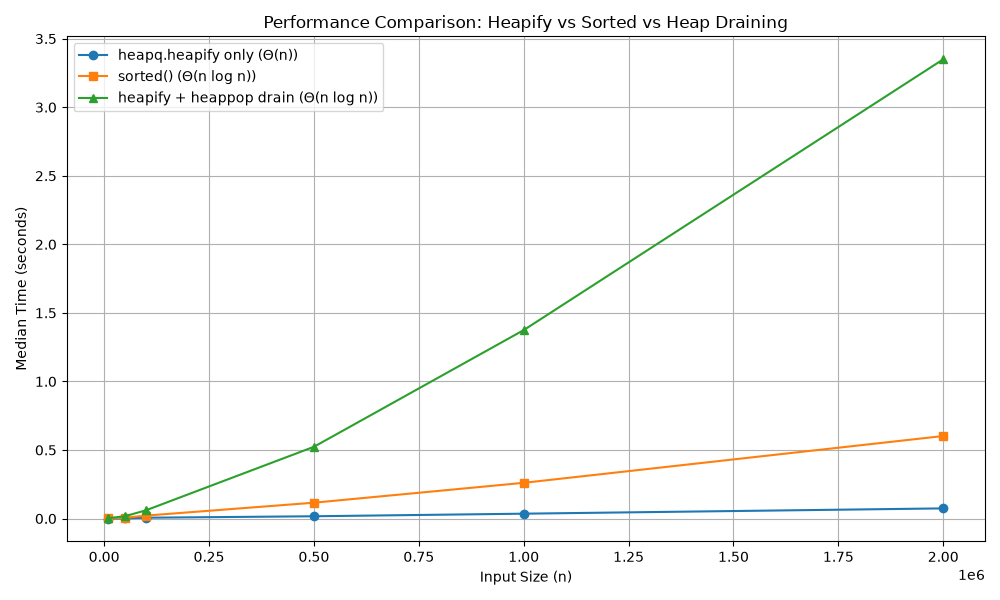

Elements from $0$ through $14$ distributed so that every internal node key strictly exceeds all descendants in its subtree, forcing maximal downward movement:
[14, 13, 12, 11, 10, 9, 8, 0, 1, 2, 3, 4, 5, 6, 7]In a complete binary tree of $n = 15$ nodes, the maximal depth of sift-down for any node is bounded by its height $h$:
Since each sift-down step can exchange a node at most once per tree level, $S_{\max} = 11$ is an absolute upper bound. Because our array achieves exactly 11 swaps, it reaches this bound and is provably as difficult as possible.
| Step | Processed Index | Array State After Step |
|---|---|---|
| Initial | — | [14, 13, 12, 11, 10, 9, 8, 0, 1, 2, 3, 4, 5, 6, 7] |
| Row 1 | $i = 6$ | [14, 13, 12, 11, 10, 9, 6, 0, 1, 2, 3, 4, 5, 8, 7] |
| Row 2 | $i = 5$ | [14, 13, 12, 11, 10, 4, 6, 0, 1, 2, 3, 9, 5, 8, 7] |
| Row 3 | $i = 4$ | [14, 13, 12, 11, 2, 4, 6, 0, 1, 10, 3, 9, 5, 8, 7] |
| Row 4 | $i = 3$ | [14, 13, 12, 0, 2, 4, 6, 11, 1, 10, 3, 9, 5, 8, 7] |
| Row 5 | $i = 2$ | [14, 13, 4, 0, 2, 5, 6, 11, 1, 10, 3, 9, 12, 8, 7] |
| Row 6 | $i = 1$ | [14, 0, 4, 1, 2, 5, 6, 11, 13, 10, 3, 9, 12, 8, 7] |
| Row 7 | $i = 0$ | [0, 1, 4, 11, 2, 5, 6, 14, 13, 10, 3, 9, 12, 8, 7] |
| Method | Final Heap Array | Key Comparisons | Swaps | Min-Heap Invariant Valid |
|---|---|---|---|---|
| Bottom-Up (Floyd) | [0, 1, 4, 11, 2, 5, 6, 14, 13, 10, 3, 9, 12, 8, 7] |
22 | 11 | true ($\forall i: A[i] \le A[2i+1], A[2i+2]$) |
| Sequential Insertion (Williams) | [0, 1, 4, 8, 2, 5, 6, 14, 11, 12, 3, 13, 9, 10, 7] |
27 | 20 | true ($\forall i: A[i] \le A[2i+1], A[2i+2]$) |
Every internal node in the adversarial input exceeds all keys in its subtree, while leaves hold $\{0, \dots, 7\}$. Each sift-down path follows smaller children directly to the leaves, executing $4 \times 1 + 2 \times 2 + 1 \times 3 = 11$ swaps and matching the theoretical upper bound. Williams' insertion processes the same array via sift-up. Because small leaf values are inserted last, they bubble up repeatedly across deep branches, resulting in 20 swaps and 27 comparisons. Floyd's bottom-up method proves far more efficient (11 swaps, 22 comparisons) because it bounds movement by tree height rather than node depth.
To achieve the left-heavy condition without violating the min-heap property, we start with a sorted array $A = [1, 2, \dots, 20]$ and reverse the elements at each depth level $d \ge 1$ (where the root is at $d=0$). For a 0-indexed array of size $N$, the elements at level $d$ span the index range:
Reversing these specific sub-arrays systematically shifts the heaviest available values to the left branches. This permutation serves as both the final min-heap array and the sequential insertion order:
[1, 3, 2, 7, 6, 5, 4, 15, 14, 13, 12, 11, 10, 9, 8, 20, 19, 18, 17, 16]
Visual representation of the complete binary min-heap (root on the left, left children denoted by ┌── and right children by └──). Heavy values are systematically shifted to the left subtrees.
│ ┌── 8
│ ┌── 4
│ │ └── 9
│ ┌── 2
│ │ │ ┌── 10
│ │ └── 5
│ │ └── 11
1
│ ┌── 12
│ ┌── 6
│ │ └── 13
│ │ └── 16
└── 3
│ ┌── 17
│ ┌── 14
│ │ └── 18
└── 7
│ ┌── 19
└── 15
└── 20Verification of the additional "left-heavy" condition. The table includes only the internal nodes that have exactly two non-empty subtrees.
| Index $i$ | Node Value $A[i]$ | $\text{Sum(Left)}$ | $\text{Sum(Right)}$ | Condition $\text{L} > \text{R}$ |
|---|---|---|---|---|
| 0 | 1 | 160 | 49 | true |
| 1 | 3 | 110 | 47 | true |
| 2 | 2 | 26 | 21 | true |
| 3 | 7 | 54 | 49 | true |
| 4 | 6 | 29 | 12 | true |
| 5 | 5 | 11 | 10 | true |
| 6 | 4 | 9 | 8 | true |
| 7 | 15 | 20 | 19 | true |
| 8 | 14 | 18 | 17 | true |
| Metric | Result | Min-Heap Invariant Valid |
|---|---|---|
| Total Elements Inserted | 20 | true ($\forall i: A[i] \le A[2i+1], A[2i+2]$) |
| Total Swaps Required | 0 |
Standard binary heap insertion adds elements level by level from left to right. A swap (sift-up) only occurs if a newly inserted child is strictly less than its parent. Since our array is perfectly pre-constructed so that every child is strictly greater than its parent (intrinsically satisfying the min-heap property), the sift-up condition is never met. Therefore, inserting this sequence element by element naturally builds the exact final heap without requiring a single swap operation.
Environment: Python 3 (Windows), execution timed via time.perf_counter().
Setup: Random permutations of distinct integers. Each size was repeated 5 times using independent input copies prepared before starting the timer. Only the specific operation was timed.
Prediction: heapify + heappop drain will be the slowest due to Python loop overhead. The sorted() function is highly optimized in C (Timsort), but since its complexity is $\Theta(n \log n)$, the $\Theta(n)$ heapify should eventually overtake it.
| Input Size ($n$) | heapq.heapify (s) |
sorted() (s) |
heapify + drain (s) |
|---|---|---|---|
| 10,000 | 0.000232 | 0.001031 | 0.002842 |
| 50,000 | 0.001161 | 0.006511 | 0.017512 |
| 100,000 | 0.006135 | 0.021635 | 0.060654 |
| 500,000 | 0.016832 | 0.115728 | 0.523506 |
| 1,000,000 | 0.035599 | 0.260711 | 1.374629 |
| 2,000,000 | 0.074252 | 0.602061 | 3.349698 |
heapq.heapify proved strictly faster than sorted() starting at the very first tested size of $n = 10,000$ and maintained this lead throughout, successfully demonstrating the advantage of its linear time complexity over Timsort's $O(n \log n)$ bound.sorted()) and Method 3 (heapify + drain) produced perfectly identical sorted arrays across all iterations.
Note: Ensure the generated image file is in the same directory as this HTML file.

Bottom-up heapify runs in strict $\Theta(n)$ time because the maximum distance any node can sift down depends on its height. In a complete binary tree, most nodes are leaves requiring zero operations. The sum of heights for all nodes in an $n$-element tree is mathematically bounded by $O(n)$, making the structural reorganization purely linear. This is evident in the table, where heapify scales linearly and consistently beats sorted().
Conversely, emptying the heap via $n$ calls to extract-min takes $\Theta(n \log n)$ time. Each extraction removes the root, replaces it with a leaf, and forces a sift-down operation spanning the tree's depth ($\Theta(\log n)$). Repeating this $n$ times intrinsically scales the cost to $\Theta(n \log n)$. Thus, heapify plus draining constitutes a complete sorting algorithm, while heapify alone does not sort the array.